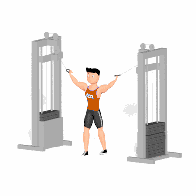

Rosca Bíceps Polia Alta Crossover

Exercício isolador de bíceps realizado em crossover com polias altas, que permite trabalho bilateral e controle de amplitude para hipertrofia e equilíbrio de força entre os braços. Indicado para praticantes de todos os níveis.
Ficha Técnica
Tipo: Musculação
Grupo Muscular: Bíceps
Aparelho: Nenhum
Músculos: Nenhum
Como realizar
- Ajuste as polias na posição alta e selecione carga adequada;
- Posicione-se no centro entre as torres com pés na largura dos ombros e segure as alças em pegada supinada;
- Mantenha os cotovelos próximos ao tronco e o antebraço estendido;
- Inspire e flexione o cotovelo, aproximando a mão ao ombro e contraindo o bíceps;
- Expire e retorne de forma controlada à posição inicial;
- Repita as repetições e troque a ordem se necessário para equilíbrio.
 RC STORE
RC STORE